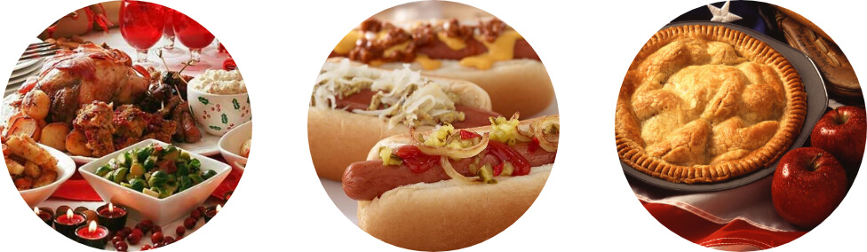

Choose a Country
Click on each flag to learn more.
Continue


United States
Traditional cuisine in the U.S has developed through a combination of native ingredients such as sweet potatoes, turkey and corn, with European foods such as milk, wheat flour and beef. During the Thanksgiving celebration most americans prefer to cook traditional dishes to celebrate the occasion.
The fast food industry is the most distinctive format in the U.S. Some of their main dishes such as hot dogs, burgers, pizza, apple pies and fried chicken have derived from recipes brought by immigrants.

Canada
Canadian cuisine varies widely depending on the regions of the nation. The four earliest cuisines of Canada have First Nations, English, Scottish and French roots, with the traditional cuisine of English Canada closely related to British cuisine, while the traditional cuisine of French Canada has evolved from French cuisine and the winter provisions of fur traders.
Canada’s most “iconic” foods were named in a survey conducted by the Canadian Broadcasting Corporation: Maple syrup, Poutine, Nanaimo bars, smoked salmon and butter tarts.